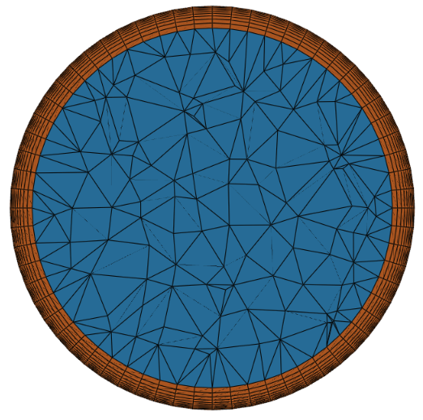
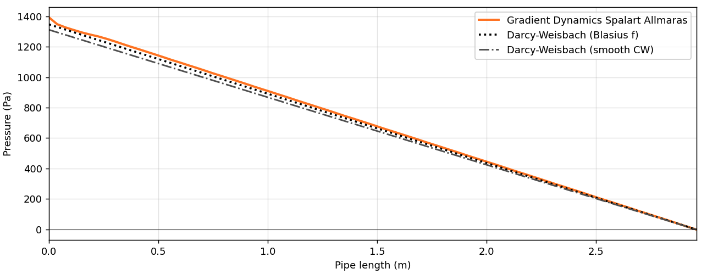
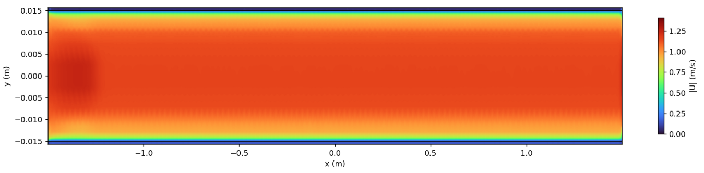
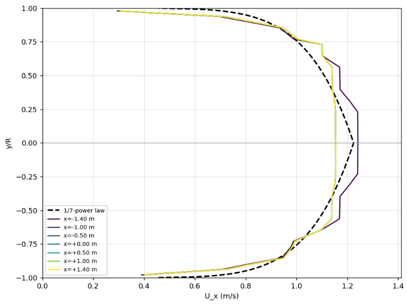

Turbulent Pipe Flow#
1. Introduction#
This study evaluates the ability of the Gradient Dynamics GPU-native CFD solver to accurately predict pressure drop and velocity distribution in turbulent pipe flow. Turbulent internal flow in circular pipes is a well-established validation benchmark for assessing the accuracy of CFD solvers in predicting wall-bounded flow behaviour, pressure losses, and turbulent velocity profiles.
The objective of this validation study is to benchmark the Gradient Dynamics CFD solver against a canonical turbulent pipe-flow case and assess its ability to accurately reproduce key internal-flow characteristics. Specifically, the study evaluates the solver’s ability to:
Predict pressure drop along a straight circular pipe.
Capture the development of turbulent internal flow.
Reproduce the expected axial velocity profile across the pipe diameter.
Demonstrate stable GPU-native RANS simulation performance with automated mesh generation.
Validate solver predictions against established analytical reference correlations commonly used in engineering analysis and design.
1.1. Reference Theory#
The simulation results were compared against established analytical reference correlations for turbulent pipe flow, including the turbulent power-law velocity profile and the Darcy-Weisbach pressure-drop equation.
1.1.1. Velocity Profile Reference: Turbulent Power-Law Profile#
The axial velocity distribution is compared against the turbulent power-law velocity profile:
where:
\(u_x(r)\): the axial velocity at radial position \(r\)
\(u_{x,max}\): the maximum velocity of the cross-section along the pipe axis
\(R\): the radius of the cylinder
\(r\): the distance from the center of the cross-section
\(n\): Reynolds-dependent constant
This profile provides a practical analytical reference for the expected radial velocity distribution in turbulent pipe flow.
1.1.2. Pressure Drop Reference: Darcy-Weisbach Equation#
The pressure drop for turbulent flow in pipes is obtained by using the Darcy-Weisbach equation:
where:
\(f\) is the Darcy friction factor calculated by the solution of the Colebrook equation
\(\rho\) is the density of the fluid
\(u\) is the average velocity of the cross section
\(l\) is the length of the pipe
\(d\) is the diameter of the cylinder
The Darcy friction factor is obtained from the Colebrook equation, which is appropriate for turbulent pipe-flow calculations where friction factor depends on Reynolds number and wall roughness.
2. Simulation Setup#
2.1. Geometry and Mesh#
The benchmark uses a straight cylindrical pipe with parameters detailed in table 1.
Table 1: Benchmark geometry description.
Parameter |
Value |
|---|---|
Pipe diameter |
0.03 m |
Pipe length |
3.0 m |
Length-to-diameter ratio |
100 |
Mean inlet velocity |
1 m/s |
Fluid density |
999.94 kg/m3 |
Kinematic viscosity |
1.673 x 10-6 m2/s |
Reynolds number |
17,932 |
The pipe was meshed using tetrahedral volume elements with prismatic boundary-layer elements at the wall (see table 2 for mesh statistics). This combination provides unstructured geometric flexibility while retaining near-wall refinement for wall-bounded turbulent-flow prediction. Figure 1 presents a cross section of the mesh output.
{kind=link}

Fig. 1 Figure 1: Cross section of mesh used in study.#
Table 2: Mesh statistics.
Mesh statistic |
Value |
|---|---|
Cell count |
452,832 |
Boundary layers |
8 |
Median y+ |
5.0 |
Boundary-layer growth rate |
1.2 |
The reported median y+ indicates that the near-wall mesh resolves the viscous sublayer/near-wall region sufficiently for a low y+ RANS setup, subject to the wall-treatment assumptions of the selected turbulence model.
2.2. Solver Configuration#
Table 3 presents the parameters used for the simulation. The simulation was run using the Gradient Dynamics GPU-native RANS CFD solver.
Table 3: Solver parameters for simulation.
Solver parameter |
Value |
|---|---|
Turbulence model |
Spalart-Allmaras |
Fluid kinematic viscosity |
1.673 x 10-6 m2/s |
Fluid density |
999.94 kg/m3 |
2.3. Boundary Conditions#
The boundary conditions are presented in table 4. The inlet velocity and fluid properties correspond to a turbulent internal-flow regime. The outlet pressure condition provides a reference pressure while allowing the solver to compute the pressure gradient required to drive the flow through the pipe.
Table 4: Boundary conditions.
Boundary patch |
Type |
Value |
|---|---|---|
Inlet |
Velocity inlet |
1 m/s |
Outlet |
Pressure outlet |
0 Pa gauge |
Wall |
No-slip wall |
- |
3. Results and Discussion#
3.1. Pressure Distribution and Pressure Drop#
Figure 2 illustrates a chart of simulated pressure field highlighting good agreement with the theoretical Darcy-Weisbach pressure-drop estimate. The pressure decreases along the pipe axis, as expected for viscous internal turbulent flow.
A small deviation from an ideal linear pressure gradient may occur near the inlet because the simulation does not prescribe a fully developed turbulent velocity profile at the inlet. Instead, the flow develops naturally from the specified inlet condition. This is physically consistent and explains the observed entrance-region behaviour.
{kind=link}

Fig. 2 Figure 2: Simulated pressure drop along pipe compared to Darcy-Weisbach curves.#
3.2. Streamwise Velocity Development#
The velocity-magnitude field in figure 3 shows the expected development of the internal flow from the inlet. The near-wall velocity is reduced by the no-slip boundary condition, while the core flow remains faster. Slight inlet-region fluctuations are visible and are consistent with flow development from the specified inlet condition.
{kind=link}

Fig. 3 Figure 3: Velocity magnitude along flow direction of pipe.#
3.3. Axial Velocity Profile Across the Pipe Diameter#
The axial velocity profiles extracted at multiple streamwise locations are compared with the 1/7th-power turbulent profile (figure 4). The Gradient Dynamics solution captures the characteristic flattened turbulent profile, with maximum velocity near the centreline and reduced velocity near the wall.
The plotted profiles show broadly consistent behaviour across downstream sampling locations, indicating that the flow approaches a developed turbulent profile. Differences near the wall and small profile irregularities are expected to depend on mesh resolution, wall treatment, turbulence-model assumptions and the exact profile-extraction location. A mesh refinement study would make this conclusion stronger and more auditable.
{kind=link}

Fig. 4 Figure 4: Axial velocity across pipe diameter, with theoretical for comparison.#
3.4. Validation Assessment#
The Gradient Dynamics solver demonstrates credible performance on this turbulent internal-flow benchmark. The pressure-drop result is consistent with the Darcy-Weisbach theoretical reference, and the radial velocity profile aligns with the expected turbulent power-law distribution.
The case also demonstrates that the Gradient Dynamics workflow can execute a complete internal-flow simulation, including geometry setup, meshing, boundary-condition definition, GPU-native RANS solution, and post-processing of pressure and velocity fields.
The study is therefore a useful validation case for applications where internal turbulent-flow prediction is important, including, cooling channels, pipe networks, heat exchangers, battery thermal-management systems, liquid cooling plates, pump and turbomachinery support workflows and industrial process-flow systems.
4. Summary#
This turbulent pipe-flow validation study demonstrates that the Gradient Dynamics GPU-native CFD solver can reproduce key features of turbulent internal flow. The solver captures the expected streamwise pressure drop and produces an axial velocity profile consistent with the established turbulent power-law reference.
The results support the use of Gradient Dynamics CFD for internal-flow applications where pressure loss and velocity distribution are critical design outputs.